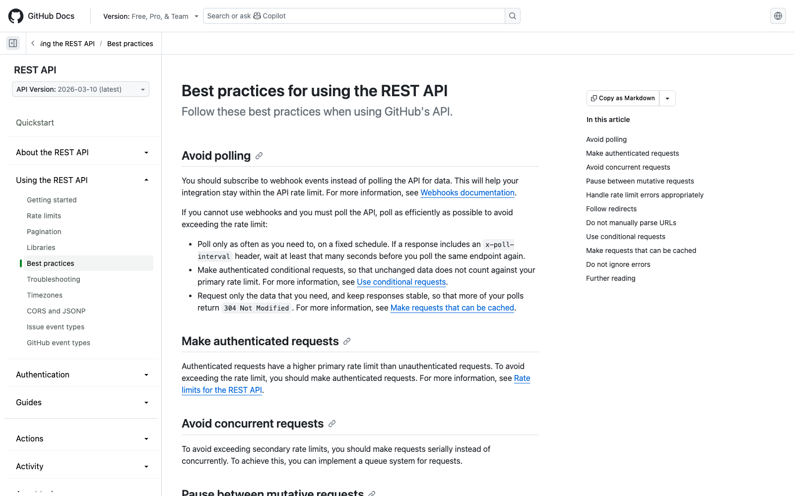
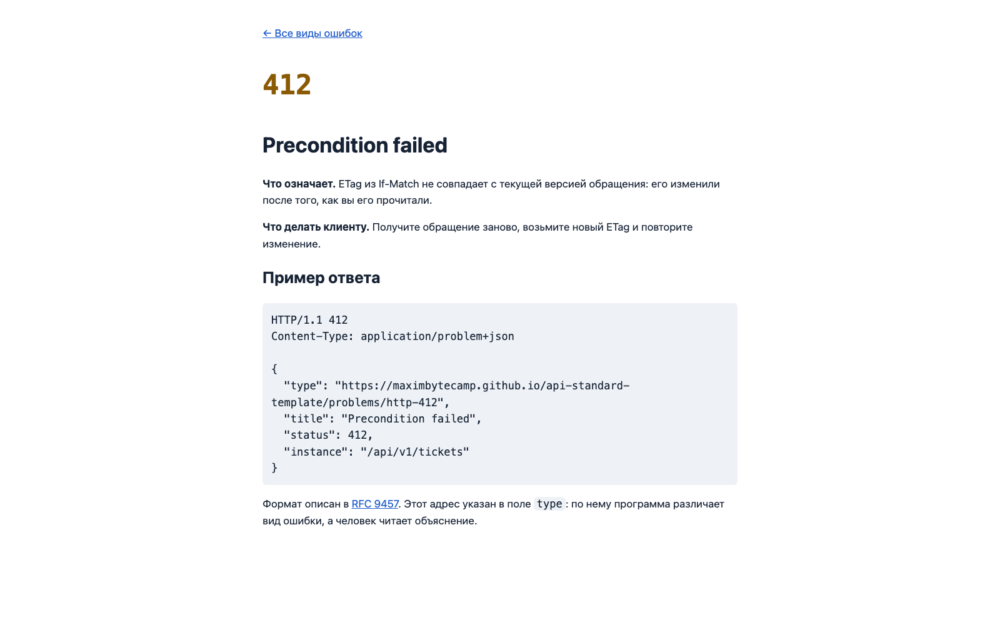
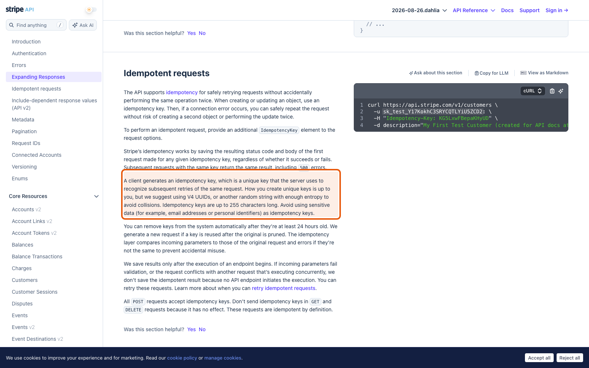

Справочник «Стандартизация HTTP API» · модуль 4 · Ошибки и устойчивость
Глава 4.3
Заголовки
контракта
Три беды случаются в любом сетевом приложении: двое правят одну запись, ответ теряется по дороге, клиент запрашивает слишком часто. Все три решаются заголовками, и все три уже описаны стандартами — придумывать ничего не нужно. В этой главе — пять заголовков, которые превращают работающий API в устойчивый.
«Тело отвечает на вопрос „что“. Заголовки отвечают на вопросы „когда“, „повторно ли“ и „кто спрашивал“.»
- Категория
- Устойчивость
- Уровень
- Средний
- Связанные главы
- 4.2 Диагностика ответа · 2.2 Методы · 7.4 Стандарты компаний
- Зачем это знать
- Чтобы API переживал гонки, потерянные ответы и наплыв запросов
§1Три беды и три заголовка
| Беда | Как выглядит | Чем лечится |
|---|---|---|
| Потерянное изменение | Двое открыли обращение, оба сохранили, правка первого исчезла | ETag + If-Match → 412 |
| Потерянный ответ | Клиент не дождался ответа, повторил POST, получил два обращения | Idempotency-Key |
| Наплыв запросов | Клиент в цикле, сервис отвечает всем медленно | X-RateLimit-* + Retry-After → 429 |
| Лишний трафик | Клиент раз в секунду скачивает то же самое | ETag + If-None-Match → 304 |
| Неразбираемая жалоба | «Вчера что-то не сохранилось» и никаких подробностей | X-Request-Id |
Обратите внимание: ни одна из бед не решается в теле ответа. Всё это — договорённости о заголовках, и они одинаковы для любого API, который их поддерживает.
§2ETag: версия представления
ETag — короткая строка, которая меняется при каждом изменении ресурса. Клиенту не важно, как она вычисляется; важно, что одинаковый ETag означает одинаковое содержимое. Учебный сервис считает его от полей обращения.
HTTP/1.1 200
etag: "4fec2a976840743a"
x-request-id: support-case-1842
content-type: application/jsonETag отдаётся с каждым чтением и с каждой записью — в том числе при создании. Дальше клиент использует его двумя способами, и это два разных заголовка запроса.
«Пришли, только если изменилось.» Экономит трафик при чтении. Ответ — 304 без тела.
«Изменяй, только если не изменилось с моего прошлого чтения.» Защищает от потерянных правок. Ответ при расхождении — 412.
Zalando RESTful API Guidelines, правило 182 «MAY consider to support Etag together with If-Match/If-None-Match header»правила компании
«MAY consider to support ETag together with If-Match / If-None-Match header to allow the server to react on stricter demands that expose conflicts and prevent lost updates.»
Перевод. MAY: можно предусмотреть поддержку ETag вместе с заголовками If-Match и If-None-Match, чтобы сервер мог отвечать на более строгие требования, обнаруживающие конфликты и предотвращающие потерянные изменения.

If-None-Match: ответ 304 не расходует квоту запросов. Приём не учебный — на нём держится работа крупных API.§3If-None-Match: не присылать то же самое
Сценарий: список обращений на экране обновляется раз в несколько секунд, но меняется редко. Без условного запроса клиент каждый раз скачивает одно и то же.
- Первое чтение. Клиент получает
200, тело иETag: "4fec2a976840743a". Значение он запоминает. - Следующее чтение. Клиент шлёт
If-None-Match: "4fec2a976840743a". - Ничего не изменилось. Сервис отвечает
304 Not Modified— без тела. Клиент рисует то, что уже держит в памяти. - Что-то изменилось. Сервис отвечает
200, новым телом и новымETag.
HTTP/1.1 304
etag: "4fec2a976840743a"
x-request-id: d1992782-8a1d-444f-b2ba-1cf8891806b6Тела нет вовсе, и это не ошибка: по стандарту у 304 тела быть не должно. Выигрыш тем заметнее, чем больше ресурс и чаще опрос; у GitHub такой ответ вдобавок не списывается из лимита запросов.
§4If-Match: потерянное изменение
Беда «потерянное изменение» выглядит так. Двое открыли одно обращение. Первый дописал описание и сохранил. Второй, ничего не зная, сохранил свою версию — и правка первого исчезла бесследно, без единой ошибки.
Аня GET /tickets/42 -> status: open, description: "…" Борис GET /tickets/42 -> то же самое Аня PATCH /tickets/42 -> description дописан # 200 Борис PATCH /tickets/42 -> status: closed # 200, правка Ани затёрта
С условным запросом второе сохранение не проходит: сервис видит, что версия изменилась.
Борис PATCH /tickets/42
If-Match: "4fec2a976840743a" # версия, прочитанная до правки Ани
-> 412 Precondition FailedHTTP/1.1 412
x-request-id: 8952af24-1c19-4801-8f28-181a89f6265f
content-type: application/problem+json
{
"type": "https://…/problems/http-412",
"title": "Precondition failed",
"status": 412,
"detail": "Ticket was changed after the version in If-Match was read",
"instance": "/api/v1/tickets/a8d04cb9-87ea-49b9-8ef6-ba10bbbad82b"
}Дальше дело клиента: перечитать обращение, показать человеку, что изменилось, и предложить сохранить поверх. Главное — изменение больше не теряется молча, а превращается в разговор.

type ведёт сюда: когда возникает 412, что это значит и что делать. Это и есть требование RFC 9457 из главы 4.1, выполненное на практике.§5Idempotency-Key: потерянный ответ
Метод POST не идемпотентен: два одинаковых запроса создают два ресурса. Обычно это правильно, но не тогда, когда второй запрос — повтор первого, ответ на который потерялся в сети.
- клиент не дождался ответа
- повторил
POST - создано два обращения
- разбирать придётся вручную
- клиент шлёт
Idempotency-Key - повторяет тот же запрос с тем же ключом
- сервис возвращает тот же результат
- обращение одно
Проверка на учебном сервисе: два запроса с одинаковым ключом дали одно и то же обращение — id совпал, общее число выросло на единицу, а не на две.
HTTP/1.1 201
etag: "72d232d249fabd6e"
location: /api/v1/tickets/6dfeb4e3-497b-4d62-8270-40dace132b9f
x-ratelimit-limit: 60
x-ratelimit-remaining: 57тот же id: True # 6dfeb4e3-…-40dace132b9f всего обращений: 4 # не 5
Важная тонкость: ключ связан с телом запроса. Если прислать тот же ключ с другим телом, это не повтор, а ошибка клиента — и сервис прямо об этом говорит:
HTTP/1.1 422
{
"title": "Validation error",
"status": 422,
"detail": "Idempotency-Key was already used with a different request body",
"instance": "/api/v1/tickets"
}Единого утверждённого RFC на Idempotency-Key нет: черновик IETF draft-ietf-httpapi-idempotency-key-header-07 истёк. Заголовок при этом давно живёт на практике: его использует Stripe, а свод Zalando описывает его правилом уровня MAY — «можно предусмотреть», а не «обязательно». Это ровно тот случай, когда порядок складывается из практики крупных API раньше, чем из документа, и потому в своём API Style Guide такое решение описывают особенно подробно: раз общего стандарта нет, единственным источником правды становится ваше собственное описание.
Zalando RESTful API Guidelines, правило 230 «MAY consider to support Idempotency-Key header»правила компании
«The unique request key is stored temporarily, e.g. for 24 hours, together with the response and the request hash (optionally) of the first request in a key cache, regardless of whether it succeeded or failed.»
Перевод. Уникальный ключ запроса хранится некоторое время, например 24 часа, вместе с ответом и (необязательно) хешом первого запроса в хранилище ключей — независимо от того, завершился тот запрос успешно или нет.
Отсюда и два решения учебного проекта: срок хранения 24 часа и сверка тела запроса. Оба взяты из этого правила, а не придуманы.

§6Лимиты и Retry-After
Ограничение частоты защищает сервис от одного невнимательного клиента, из-за которого плохо становится всем. Но отказ должен быть понятным: клиент обязан узнать, сколько ему осталось и когда можно снова. Сам код 429 Too Many Requests описан в RFC 6585, раздел 4, а набор сопровождающих заголовков стандартом не закреплён — его берут из практики.
HTTP/1.1 201 x-ratelimit-limit: 2 x-ratelimit-remaining: 0 x-ratelimit-reset: 60
HTTP/1.1 429
retry-after: 60
x-ratelimit-limit: 2
x-ratelimit-remaining: 0
x-ratelimit-reset: 60
{ "title": "Too many requests", "status": 429,
"detail": "Write limit of 2 requests per minute exceeded" }429.остаток429.паузаZalando RESTful API Guidelines, правило 153 «MUST use code 429 with headers for rate limits»правила компании
«X-RateLimit-Reset: The relative time in seconds when the rate limit window will be reset. Beware that this is different to Github and Twitter's usage of a header with the same name which is using UTC epoch seconds instead.»
Перевод. X-RateLimit-Reset — относительное время в секундах до сброса окна ограничения. Учтите, что это отличается от того, как заголовок с тем же именем используют GitHub и Twitter: там указываются секунды UTC epoch.
Различие настолько известное, что свод Zalando предупреждает о нём прямо в тексте правила. Клиент, написанный под одно прочтение, сломается на другом: «60» он поймёт как «через минуту», а «1789516800» — как «через полвека». Единицу измерения нужно указывать в описании операции явно; действующий черновик IETF draft-ietf-httpapi-ratelimit-headers как раз пытается свести оба варианта к одному.

x-ratelimit-reset — момент времени, а не число секунд. Наглядный пример того, почему одинаковые имена заголовков ещё не означают одинакового поведения.§7X-Request-Id: сшивка журналов
Заголовок, который стоит почти ничего и окупается при первой же жалобе. Учебный сервис добавляет его к каждому ответу, а если клиент прислал свой — сохраняет присланный.
VALID_REQUEST_ID = re.compile(r"^[A-Za-z0-9._-]{1,128}$") incoming = request.headers.get("X-Request-Id") request_id = incoming if incoming and VALID_REQUEST_ID.match(incoming) else str(uuid4())
Проверка обязательна: чужое значение уходит в журнал, и без ограничения длины и набора символов в журнал можно записать что угодно. Не подошло — сервис выдаёт своё значение, а не отказывает в запросе.
HTTP/1.1 200
etag: "4fec2a976840743a"
x-request-id: support-case-1842| Кто | Имя заголовка | Особенность |
|---|---|---|
| Учебный проект | X-Request-Id | Принимает значение клиента, иначе выдаёт своё |
| Zalando (правило 233) | X-Flow-ID | Один идентификатор на всю цепочку вызовов между сервисами |
| Azure | x-ms-client-request-id | Отдельно клиентский идентификатор и отдельно серверный |
Имена разные, идея одна: у каждого запроса есть метка, по которой его находят в журналах всех участников. Выбирать можно любое имя — нельзя только не выбрать никакого.
§8Почему браузер не видит заголовки
Ловушка, на которой спотыкаются все: в терминале заголовки есть, а страница их не видит. Причина не в сервисе, а в правилах браузера: со страницы другого источника доступны только простые заголовки плюс те, что сервис разрешил явно.
app.add_middleware(
CORSMiddleware,
allow_origins=["http://localhost:5173"],
expose_headers=["ETag", "Location", "X-Request-Id", "Retry-After",
"Deprecation", "Sunset",
"X-RateLimit-Limit", "X-RateLimit-Remaining", "X-RateLimit-Reset"],
)access-control-allow-origin: http://localhost:5173
access-control-expose-headers: ETag, Location, X-Request-Id, Retry-After, Deprecation,
Sunset, X-RateLimit-Limit, X-RateLimit-Remaining, X-RateLimit-ResetВывод практический: всякий раз, добавляя в контракт новый заголовок ответа, задайте себе вопрос — нужен ли он веб-клиенту? Если да, впишите его в expose_headers тем же изменением, иначе заголовок будет существовать для curl и не существовать для страницы.

curl, но не виден здесь, дело в настройке CORS.§9Частые ошибки
§10Проверьте себя
- Что означает совпадение
ETagу двух ответов? - Чем отличаются
If-None-MatchиIf-Matchпо смыслу и по коду ответа? - Опишите словами, как
412предотвращает потерянное изменение. - Почему
Idempotency-Keyсвязывают с телом запроса, а не только с адресом? - Какие четыре заголовка сопровождают ограничение частоты и что говорит каждый?
- Клиент видит
x-ratelimit-reset: 1789516800. Как понять, секунды это или момент времени? - Заголовок виден в
curl, но не виден на странице. В чём причина и где это чинится?
ETag — версияIf-None-Match → 304If-Match → 412Idempotency-Keyключ + телохранение 24 часаX-RateLimit-LimitX-RateLimit-RemainingX-RateLimit-ResetRetry-After → 429X-Request-Idпроверять присланноеexpose_headersСправочник «Стандартизация HTTP API» · модуль 4 · глава 4.3Макаров Максим Николаевич